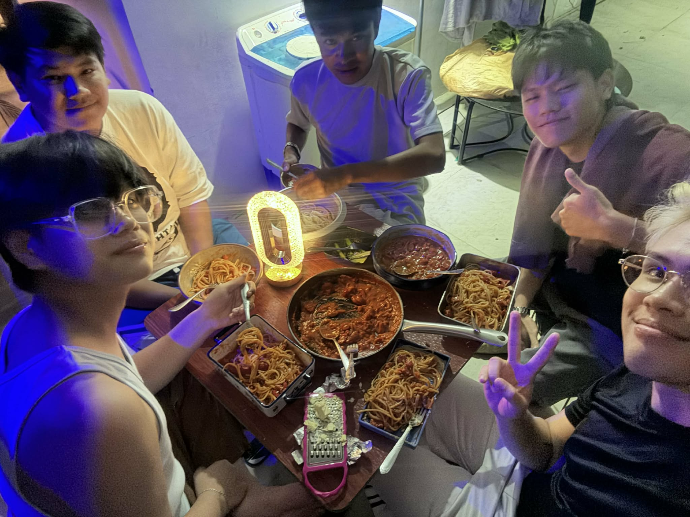
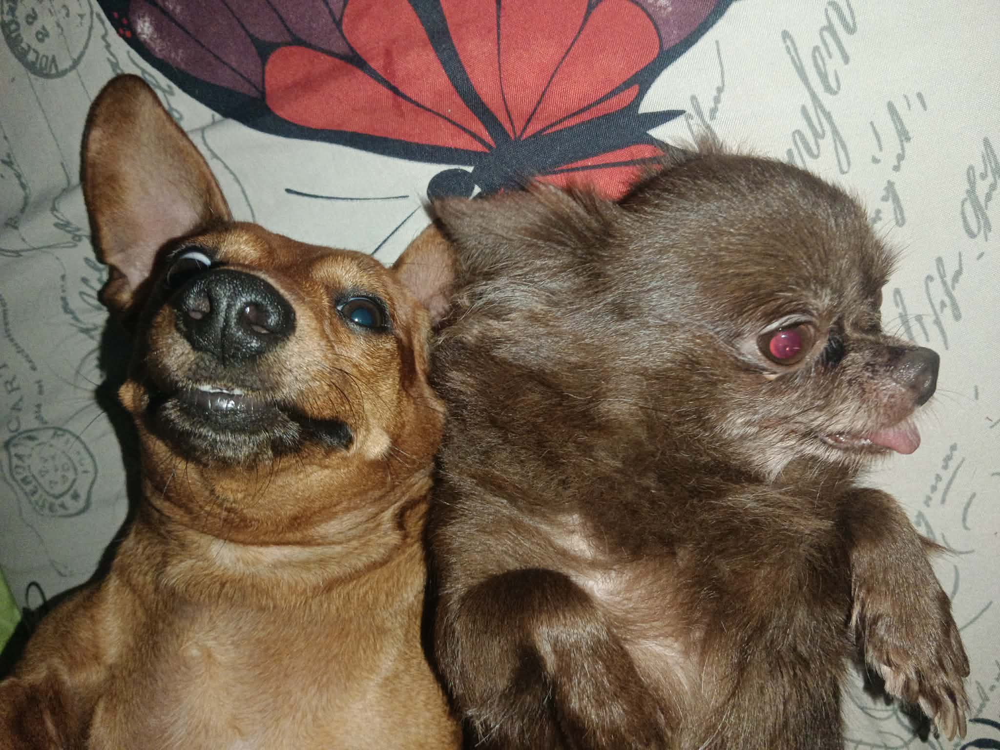
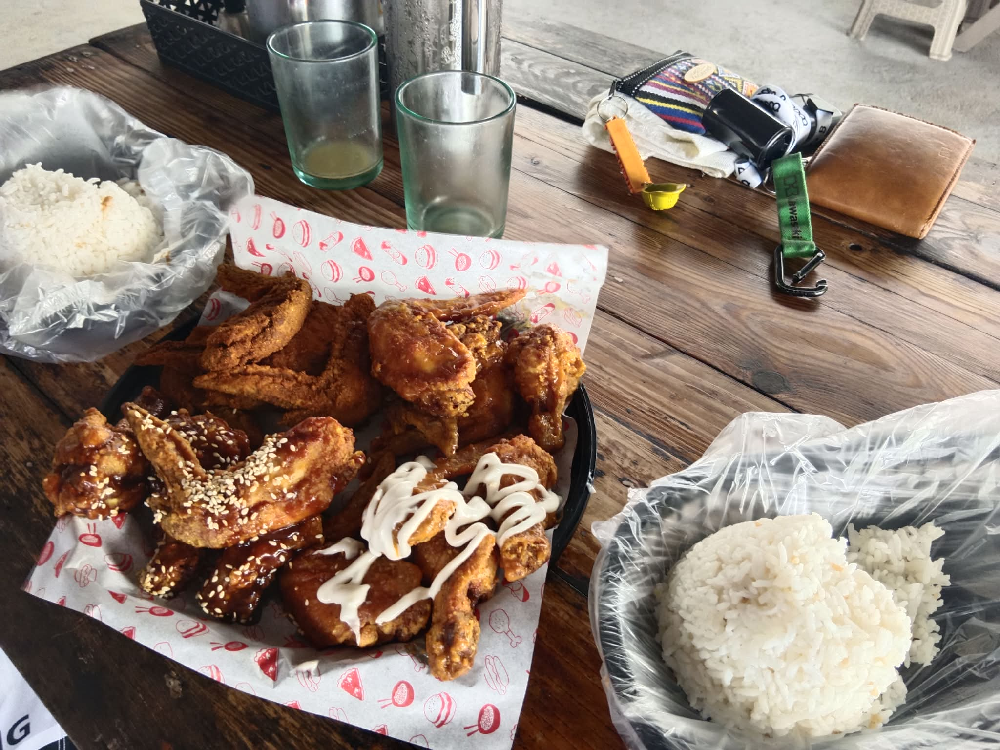
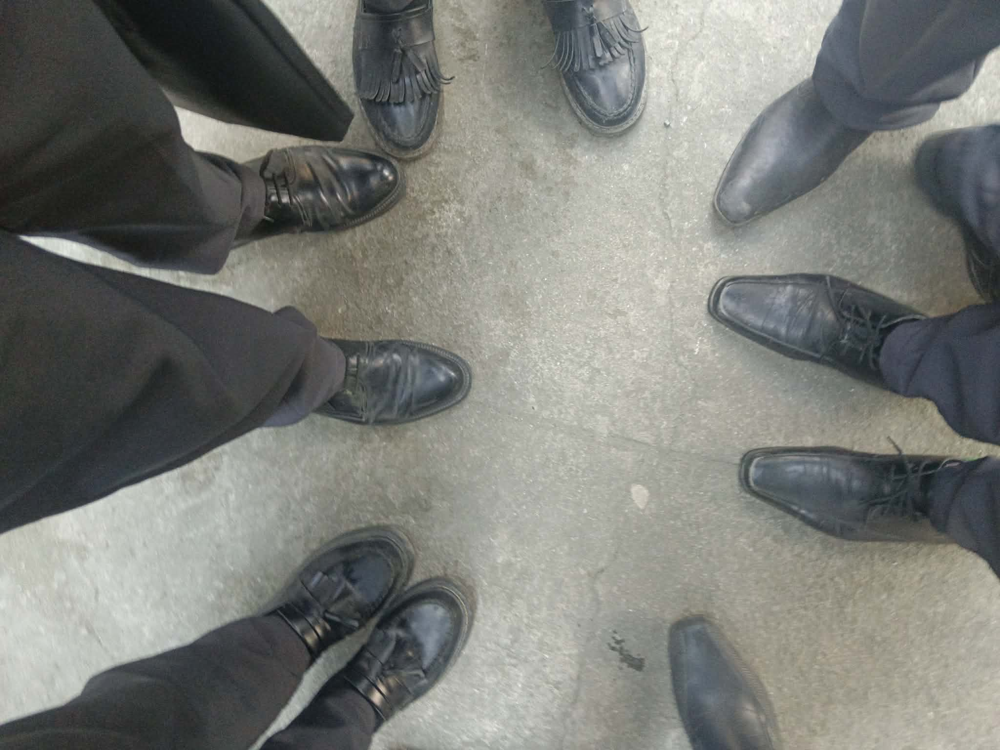
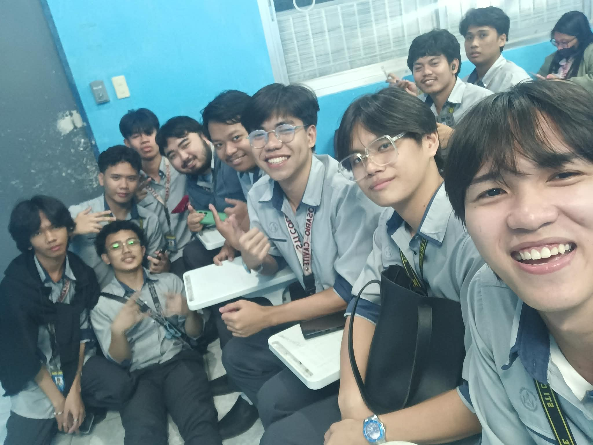
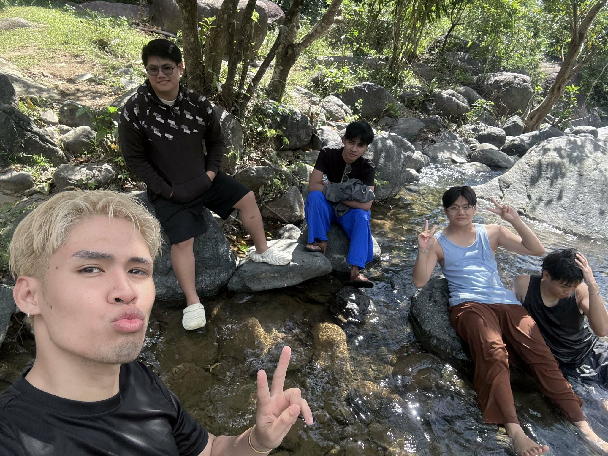
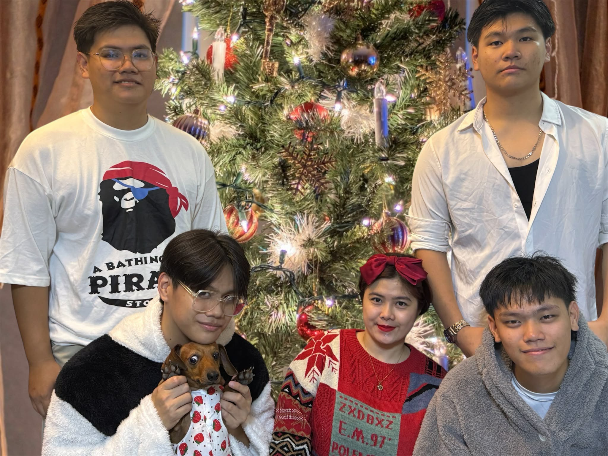

Hello! I am Wee-Bhien L. Li, A student of STI, Rosario. Who explores everything from places to foods.
Even though I hate spending too much money, still I want to try new things along the way trying to
enjoy the adventure not only as a student but also as who I want to be.

I love my pet dogs!
I have a daschund named Ciacia and a Chihuahua named Tiny, they are my companions who loves the topic of sleep.
They also have high demands for food, and are picky eaters. These two have different personalities, Ciacia
is playful and kind of crazy, while Tiny is more reserved and calm.

My Hobbies!
I love to explore coding, even if I find it hard to understand. I also enjoy drawing and painting as a way to kill time.
But playing mobile games is one of the most pasttime I enjoy, especially when I am bored. But the ultimatum is to
sing when there's no internet connection.

All Accomplishments!
About my Goals in Life!
To graduate and have work as early as possible, my dream is to become expert at what i'm doing a Programmer, Aside from that
I also want to become an entrepreneur at the same time so money is circulating instead of saving them. Golden rule in life
is to enjoy the process and be financially stable at age 30, and buy neccessities and needs.


I want to start a real experience
Even if I am still a student, I think what I do isn't enough to prepare me in corporate world. I want to build experience
and connections as possible, being able to socialize and try new things out of my comfort zone makes me feel like I have
completed a mission in my life. Hence, I want to dedicate my time to build a carreer.


Nothing is impossible unless you make it!
I believe that doing nothing, solves nothing. but searching for it may solve something, even if the results are small.
At least you have tried, when no one else did. The most important thing was to overcome the fear of trying, and instead
try to learn something new, that feels weird for you. That's what who I want to become.